측량및지형공간정보기사 (2007-09-02 기출문제)
1과목: 측지학 및 위성측위시스템
1. 반지름이 5000㎞인 구(球)에서 수평거리 10㎞에 대한 곡률 오차는 얼마인가?
- 0.⑤ ㎞
- 0.04 ㎞
- 0.03 ㎞
- 0.01 ㎞
(정답률: 74%)

2. 다음 설명 중 옳지 않은 것은
- 지구의 적도반경을 a, 극반경을 b라 할 때 편평률
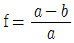
이다. - 지구의 적도반경을 a, 극반경을 b라 할 때 편심률
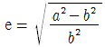
이다. - 사진측량은 기하학적 측지 분야이다.
- 지구의 형상해석은 물리학적 측지학에서 다룬다.
(정답률: 64%)
3. 지도 제작의 기준이 되는 기하학적인 지구의 형상은?
- 물리적 지구표면
- 지구타원체
- 지오이드
- 구체
(정답률: 50%)
4. 다음 설명 중 잘못된 것은?
- 지구상의 한 점에서 타원체의 법선과 지오이드의 법선이 일치하지 않는 차를 연직선 편차라고 한다.
- 태양이 천구상에서 서에서 동으로 진행하는 경로를 항도라 한다.
- 적경은 천구의 적도상에서 춘분점으로부터 동쪽으로 향하여 잰 직각거리이다.
- 측지선은 타원체 상에서 두 점을 포함하는 소원의 일부이다.
(정답률: 70%)
5. 우리나라에 설치된 수준점의 표고에 대한 설명으로 옳은 것은?
- 평균 해수면으로부터의 높이를 나타낸다.
- 도로의 시점을 기준으로 나타낸다.
- 만조면으로부터의 높이를 나타낸다.
- 삼가점으로부터의 높이를 나타낸다.
(정답률: 84%)
6. 천문측량에서 동일고도의 두 별을 관측하여 각각의 적위, 천정거리에 의해 위도를 결정하는 방법은?
- 베르누이법
- 탈코트법
- 뉴턴법
- 주극성법
(정답률: 67%)
7. 동일 자오선 상에 있는 A점과 B점에서의 천의 북극의 고도가 각각 α = 30°, β = 27° 로 측정되었을 때 AB간의 거리가 333㎞라 하면 지구 반지름은?
- 6332.85 ㎞
- 6348.38 ㎞
- 6359.83 ㎞
- 6368.58 ㎞
(정답률: 67%)
8. 연직선 편차란 무엇인가?
- 타원체의 법선과 지오이드의 법선이 이루는 차이
- 연직선과 지오이드면이 이루는 차이
- 천문위도와 천문경도가 이루는 차이
- 연직선과 중력이상이 이루는 차이
(정답률: 17%)
9. 다음 설명 중 옳지 않은 것은?
- 천문측량에 의한 경･위도 측정은 관측점마다 독립적으로 이루어진다.
- 지구상의 위치는 지리학적 경･위도 및 준거타원체상으로부터의 높이로 표시된다.
- 목적하는 측량의 정확도에 따라서 지구를 구로 생각할 수 있다.
- 지구상의 위치는 직각좌표나 극좌표 등으로 표시하기도 한다.
(정답률: 58%)
10. 다음 중 중력보정에 속하지 않는 것은?
- 고도보정
- 아이소스타시보정
- 경도보정
- 무게보정
(정답률: 37%)
11. 다음 중 위성의 궤도 요소에 속하지 않은 것은?
- 궤도 경사각
- 이심율
- 궤도 주기
- 위성의 고도
(정답률: 50%)
12. 지구자장의 성인이 아닌 것은?
- 지구의 자화
- 자이로 마그네틱 효과에 의한 설명
- 외부의 자전전류
- 내부의 자전전류
(정답률: 55%)
13. 해수면의 높이 변화를 측정하기 위하여 위성 고도계에서 관측하는 관측치는?
- 위성에서 송신한 신호가 해수면에 반사되어 돌아오는 시간
- 위성과 해상의 목표물과의 거리
- 위성과 해상의 목표물과의 각도
- 위성에서 촬영하는 영상
(정답률: 62%)
14. 지자기(址玼氣)측량에 관한 다음 설명 중 맞지 않은 것은?
- 지자기는 자오선 방향에 대하여 등으로 편각을 정(+), 북을 향하여 하향으로 기우는 복각을 부(-)로 표시한다.
- 한국에서는 대체로 편각이 -5° ~ -6° 정도로 알려지고 있으나 복각 및 분력에 대해서는 아직 뚜렷이 제시된 자료가 없다.
- 자력의 크기의 단위로서 지구물리에서는 C, G. S 단위(가우스)외에 r(감마)가 사용되고 있다.
- 자력의 강도 관측에서 Flux gate 자력계, Proton 자력계 등을 사용하고 있다.
(정답률: 55%)
15. 다음 내용 중 잘못 설명된 것은?
- 우리나라 수준망은 인하공업전문대학 구내에 설치된 수준원점을 근간으로 구성되어 있다.
- 우리나라 수준망은 전국을 포함하는 다수의 수준환으로 구성되어있다.
- 우리나라 1등 수준점간 평균거리는 약 4㎞, 2등 수준점간 평균거리는 약 2㎞ 이다.
- 바다의 깊이는 평균최고조조면(MHHW)을 해안선은 평균 최저저조면(MLLW)을 기준으로 한다.
(정답률: 54%)
16. 준성(quasar)으로부터 발생되는 전파를 이용하여 수평위치를 경정하는 측량 방법은?
- GPS(Global Positioning System)
- SLR(Satellite Laser Ranging)
- VLBI(Very Long Baseline Interferometry)
- LLR(Lunar Laser Ranging)
(정답률: 70%)
17. 다음 중 위성의 기하학적 배치 상태에 따른 정밀도 저하율을 뜻하는 것은?
- 멀티패스(Multipath)
- DOP
- 싸이클 슬립(Cycle Slip)
- S/A
(정답률: 64%)
18. 단독측위, DGPS, RTK-GPS 등에 관한 설명으로 옳지 않은 것은?
- 단독측위시 많은 수의 위성을 동시에 관측할 때 위성의 궤도정보에 대한 오차는 측위결과에 영향이 없다.
- DGPS는 신점과 기지점에서 동시에 관측을 실시하여 양 점에서 관측한 정보를 모두 해석함으로써 신점의 위치를 결정한다.
- RTK-GPS는 위성신호 중 반송파 신호를 해석하기 때문에 코드 신호를 해석하여 사용하는 DGPS 보다 정확도가 높다.
- RTK-GPS는 공공측량시 3, 4급 기준점측량에 적용할 수있다.
(정답률: 19%)
19. 임의 지점에서 GPS 관측을 수행하여 WGS84 타원체고(h)57.234m를 획득하였다. 그 지점의 지구중력장 모델로부터 산정한 지오이드고(N)가 25.578m 라 한다면 정표고(H)는 얼마인가?
- -31.656m
- 25.578m
- 31.656m
- 82.812m
(정답률: 54%)
20. GPS 관측 오차들 중에서 수신기의 시계오차만을 제거하려면 다음 중 무엇을 이용해야 하는가?
- 단일차분
- 이중차분
- 삼중차분
- 차분되지 않은 자료
(정답률: 46%)
2과목: 응용측량
21. 삼각형의 두 변과 그 협각을 측정해서 그림과 같은 측정값을 얻었다. 이 삼각형의 면적은?
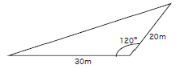
- 230m2
- 240m2
- 250m2
- 260m2
(정답률: 59%)
22. 다음 그림과 같은 지형의 면적은 얼마인가? (단, 단위는 m 이다.)
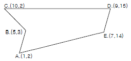
- 63m2
- 58m2
- 53m2
- 48m2
(정답률: 50%)
23. 그림과 같은 형태의 넓은 면적의 토량을 계산하는데 적당한 식은? (단, 각각의 직사각형 면적은 같고, h1, h2, h3, h4는 표고를 의미함)
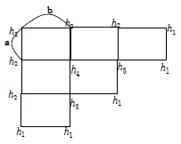
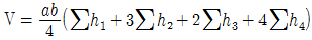
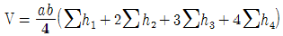
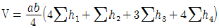
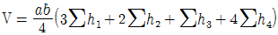
(정답률: 59%)
24. 다음과 같은 곡선의 시점에서 종점을 시준할 수가 없어서 ∠L, ∠M, ∠N, ∠O, ∠P를 측정 하였다. 이 각들의 합계가 684° 30′ 일 때 노선의 교각 (交角.I)은?
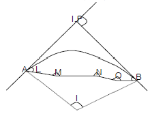
- 85° 30′
- 94° 30′
- 75° 30′
- 90° 00′
(정답률: 43%)
25. 교각 I=60°, 원곡선의 반지름 R= 200m 일 때 중앙종거법에 의하여 원곡선을 측설할 때 8등분점의 중앙종거는 얼마인가?
- 1.71m
- 3.04m
- 6.82m
- 26.8m
(정답률: 27%)
26. 접선길이가 40m, 교각(交角)이 60° 일 때 원곡선의 곡선길이(C.L)는 얼마인가?
- 72.55m
- 59.82m
- 45.22m
- 38.⑤m
(정답률: 0%)
27. 하천 측량의 작업을 크게 3가지로 분류할 때 다음 중 이에 해당하는 측량과 가장 거리가 먼 것은?
- 강우량측량
- 유량측량
- 수준측량
- 평면측량
(정답률: 60%)
28. 다음 중 하천측량에서 수준측량작업과 거리가 먼 것은?
- 거리표설치
- 종단 및 횡단측량
- 심천측량
- 유속측량
(정답률: 9%)
29. 그림과 같은 삼각형 ABC의 면적을 1:1로 분할할 경우 P점의 좌표는? (단, 단위는 m이다.)
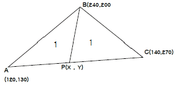
- x=130. y=195
- x=128, y=200
- x=130, y=200
- x=128, y=195
(정답률: 60%)
30. 하천 양만의 고저차를 측정할 때 교호수준측량을 많이 이용하고 있는데 가장 큰 이유는 무엇인가?
- 기계오차 및 광선의 굴절에 의한 오차를 소고하기 위하여
- 스타프(항척)를 세우는 방법이 쉽기 때문에
- 개인오차를 제거하기 위해
- 과실에 의한 오차를 제거하기 위해
(정답률: 64%)
31. 터널의 곡선부 측설법으로 적당하지 않은 방법은?
- 지거법
- 접선편거법
- 중앙종거법
- 현편거법
(정답률: 27%)
32. 현편거법에 의하여 갱내 곡선설치를 할 때 변 SQ의 크기는 얼마인가?
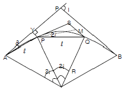
- ℓ2/R
- ℓ2/2R
- 2ℓ2/R
- ℓ/R
(정답률: 55%)
33. 다음 완화곡선에 대한 설명 중 옳지 않은 것은?
- 완화곡선의 접선은 시점에서 원호에, 종점에서 직선에 접한다.
- 모든 클로소이드는 닮은 꼴이며 클로소이드 요소에는 길이의 단위를 가진 것과 단위가 없는 것이 있다.
- 켄트(Cant)는 원상력 때문에 발생하는 불리한 점을 제거하기 위해 두는 편경사이다.
- 단위 클로소이드란 매개 변수 A가 1인, 즉 R･L = 1의 관계에 있는 클로소이드이다.
(정답률: 19%)
34. 다음과 같이 갱내 직접 수준측량을 실시하였을 때, A점 표고를 기준으로 AB점간의 표고차는 얼인가?
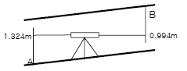
- 0.330m
- 1.312m
- 1.988m
- 2.318m
(정답률: 34%)
35. 교각(I)이 60°이고, 곡선반지름(R)이 150m, 노선의 시점에서 교점(I.P)까지의 추가거리가 540m일 때, 시단현의 편각은 얼마인가? (단, 중심점의 말뚝간격은 20m 이다.)
- 1° ⑤′ 38″
- 1° ⑤′ 55″
- 1° 15′ 38″
- 1° 15′ 55″
(정답률: 39%)
36. 경관평가에 있어서 시준선과 시설물 축선이 이루는 수평 시각(θ)의 범위로 시설물 전체의 형상을 인식할 수 있고, 경관의 주제로서 적당한 경관을 얻을 수 있는 범위는?
- 0° ＜ θ ≤ 5°
- 5° ＜ θ ≤ 10°
- 10° ＜ θ ≤ 30°
- 50° ＜ θ ≤ 60°
(정답률: 43%)
37. 노선측량에서 도로를 신설 할 때, 실시설계측량에 해당되지 않는 것은?
- 지형도 작성
- 중심선측량
- 용지측량
- 고저측량
(정답률: 54%)
38. 유량측정장소의 선정이 바르지 못한 것은?
- 교량, 그 밖의 구조물에 의한 영향을 받지 않는 곳
- 협류에 의하여 불규칙한 영향을 받지 않는 곳
- 완류와 역류가 생기지 않는 곳
- 유수 방향의 변화가 활발히 발생하는 곳
(정답률: 64%)
39. 지하시설물 측량에 관한 다음 사항 중 바르지 못한 것은?
- 지표면상에 노출된 지하시설물은 측량하지 않는다.
- 지하시설물의 위치, 깊이 서로 떨어진 거리 등을 측량 한다.
- 지하시설물에 대한 탐사 간격은 20m 이하로 한다.
- 지하시설물이란 상･하수도, 가스, 통신 등 지하에 매설된 시설물을 의미한다.
(정답률: 50%)
40. 일반적인 택지 조성측량의 순서로 가장 적합한 것은?
- 사전조사 → 현황측량 → 확정측량 → 경계측량 → 택지조성공사 → 준공측량
- 사전조사 → 현황측량 → 택지조성공사 → 확정측량 → 경계측량 → 준 공측량
- 사전조사 → 형황측량 → 경계측량 → 택지조성공사 → 확정측량 → 준공측량
- 사전조사 → 현황측량 → 준공측량 →경계측량 → 택지조성공사 → 확정측량
(정답률: 64%)
3과목: 사진측량 및 원격탐사
41. 다음의 사진기준점 측량방법 중 사진을 기본단위로 하여 조성하는 방법은?
- 광속조정법
- 독립모형조정법
- 다항식법
- 스트립조정법
(정답률: 20%)
42. 항공사진의 기복변위에 관한 설명으로 틀린 것은?
- 기복변위는 중심투영으로 인하여 생긴다.
- 변위량은 촬영고도에 비례한다.
- 변위량은 지형지물의 비고에 비례한다.
- 변위량은 사진 연직점에서 상이 생기는 거리에 비례한다.
(정답률: 0%)
43. 항공사진의 축척을 결정하는 요건과 가장 거리가 먼 것은?
- 도화기의 성능 및 정밀도
- 지도의 축척 및 등고선 간격
- 비행기의 상승한도 및 항속시간
- 지상 기준점의 배치상태
(정답률: 54%)
44. 초점거리(f) 150㎜ 인 사진기로 촬영하고 2700m에서 촬영한 경우에 사진축척은 얼마인가?
- 1/20000
- 1/19000
- 1/18000
- 1/17000
(정답률: 63%)
45. 1:20000 항공사진을 촬영한 사진기의 초점거리가 25㎝ 이고 사진크기가 23㎝×23㎝이며, 종중복도가 60% 일 때 기선고도비는 얼마인가?
- 0.30
- 0.33
- 0.37
- 0.40
(정답률: 10%)
46. 촬영고도 H=6350m, 사진Ⅰ의 주점기선장 b1=67㎜, 사진 Ⅱ의 주정기선장 b2=70㎜ 이고, 시차차 Δp=1.37㎜ 일 때 산정(山頂)의 비고는 얼마인가?
- 107m
- 117m
- 127m
- 137m
(정답률: 60%)
47. 다음 중 병충해 조사 및 삼림조사 홍수지역의 판독 등에 가장 적합한 사진은?
- 펜크로 사진
- 적외선 사진
- 자외선 사진
- 칼라 사진
(정답률: 70%)
48. 다음 중 사진의 축척을 일치시키고 경사에 의한 변위를 수정하여 제작한 사진지도 중 등고선이 삽입되지 않은, 사진지도는?
- 약집성 사진지도
- 조정집성 사진지도
- 정사투영 사진지도
- 중심투영 사진지도
(정답률: 55%)
49. 해석적인 사진표정 중 내부표정에서 고려해야 할 사항이 아닌 것은?
- 렌즈의 왜곡
- 피사체의 표고
- 대기굴절
- 지구의 곡률
(정답률: 59%)
50. 편위 수정법에 의하여 1/5000 의 지형도 측정을 계획하고 있다. 편위 수정을 평면 기준점을 기준으로 하여 실시하였을 때 허용해야 할 최대 비고는? (단, 초점거리는 150㎜, 사진축척은 1/10000, 완성도상(1/5000)에서의 허용오차는 0.3㎜이며, 도화에 이용될 지역은 1/10000의 사진에서 주점으로부터 3㎝의 범위이다.)
- 3.0m
- 5.7m
- 7.5m
- 11.2m
(정답률: 39%)
51. 다음 중 기계적 절대표정의 내용이 아닌 것은?
- 축척의 조정
- 경사의 조정
- 위치의 결정
- 증시차의 조정
(정답률: 50%)
52. 지상기준점의 사용을 최소화하여 항공삼각측량을 수행하기 위해 항공기에 탑재되어야 할 장비는?
- 다중파장센서(또는 다중분광센서)
- 적외선 카메라
- 토탈스테이션
- GPS와 INS(관성항법장치)
(정답률: 72%)
53. 전자파의 파장대 중 육지와 수역(물)의 구분이 가장 잘 구분되는 파장되는?
- 녹색 파장대
- 적색 파장대
- 청색 파장대
- 근적외선 파장대
(정답률: 64%)
54. 공간해상도가 높은 전정색영상과 공간해상도가 낮은 칼라(다중분광)영상을 합성하여 공간해상도가 높은 칼라영상을 만드는데 사용하는 영상처리방법은?
- Fourier 변환
- 영상융합(Image Fusion) 또는 해상도 융합(Resolution Merge)변환
- NDVI(Normalized Difference Vegetation Index) 변환
- 공간 필터링(Spatial Filtering)
(정답률: 54%)
55. GIS 공간객체 타입 중 1차원 객체 타입이 아닌 것은?
- 선분(line segment)
- 연속분선(string)
- 호(Arc)
- 격자셀(grid cell)
(정답률: 58%)
56. 공간좌표 변환에 사용되는 Affine 식에 대한 다음 설명 중 옳지 않은 것은?
- 미지수가 6개 이다.
- 등각 심사변환이다.
- 좌표계의 회전이 포함된다.
- 원점의 이동이 포함된다.
(정답률: 31%)
57. 래스터 자료의 압축 기법 중 대상지역에 해당하는 격자들의 연속적인 연결상태를 파악함으로써 압축효율이 높으나 객체 간의 경계 부분이 이중으로 입력되어야 하는 단점이 있는 기법은 무엇인가?
- 런 렝스 코드(run-length code) 기법
- 사지수형(quadtree) 기법
- 블록 코드(block code) 기법
- 체인 코드(chain code) 기법
(정답률: 60%)
58. 다음 중 GIS를 사용하여 발생되는 장점이 아닌 것은?
- 수치데이터로 구축되어 지도 축척의 손쉬운 변환이 가능하다.
- 기존의 수작업으로 하는 작업을 컴퓨터를 이용하여 손쉽게 할 수 있다.
- GIS 데이터는 CAD와 비교하여 데이터의 형식이 간편하여 손쉬운 분석이 가능하다.
- 다양한 공간적 분석이 가능하여 도시계획, 환경, 생태 등 다양한 분야에서 의사결정에 활용될 수 있다.
(정답률: 55%)
59. 다음 표는 영상 분류오차행렬(Classification Error Matrix)이다. PCC(Percent Correctly Classified)지수는 얼마인가?
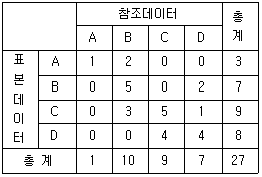
- 55.56(%)
- 44.44(%)
- 81.48(%)
- 18.52(%)
(정답률: 67%)
60. 다음 그림은 6×6화소 크기의 래스터 데이터를 수치적으로 표현한 것이다. 이 데이터를 2×2 화소 크기의 데이터로 만들고자 한다. 2×2 화소 데이터의 수치값을 결정하는 방법은 중앙값 방법(Median Method)을 사용하고자 한다. 결과로 옳은 것은?
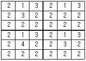
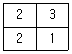
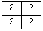
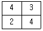
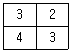
(정답률: 62%)
4과목: 지리정보시스템
61. 다음 중 일반적으로 오차론에서 다루는 오차는?
- 정오차
- 착오
- 우연오차
- 누차
(정답률: 79%)
62. 트래버스망을 선정할 때 유의할 사항에 대한 설명으로 옳지 않은 것은?
- 노선형(路線形)트래버스는 결합 트래버스가 되지 않도록 할 것
- 측량표가 안전하게 보존될 수 있는 곳일 것
- 측점은 앞으로의 세부측량에 편리한 곳일 것
- 측점은 관측할 때 지장이 없는 곳일 것
(정답률: 47%)
63. 수준측량에서 5m 표척 상단이 후방으로 30㎝ 기울어져 있다. 표척의 읽음값이 4m 이었다면 이 관측값에 대한 오차는?
- 약 0.7 ㎝
- 약 1.5 ㎝
- 약 3.0 ㎝
- 약 6.0 ㎝
(정답률: 25%)
64. 축척 1/5000 인 지형도(도면)의 면적을 측정하여 4.8cm2 결과를 얻었다. 이 때 도면의 모든 점이 1.5%가 수축되어 있었다면 실제 면적은 얼마인가?
- 11643m2
- 11820m2
- 12183m2
- 12368m2
(정답률: 60%)
65. 다음 표의 배횡거 a의 값은 얼마인가? [단위 : m]
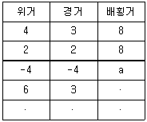
- a = 6m
- a = 13m
- a = 3m
- a = 10m
(정답률: 48%)
66. 삼각점 A에 기계를 설치하여 삼각점 B가 시준 되지 않기 때문에 점 P를 관측하여 T′ = 68° 32′ 15″를 얻었을 때 보정각 T는 약 얼마인가? (단, S = 1.3㎞, θ = 5m, ø = 302°56′)
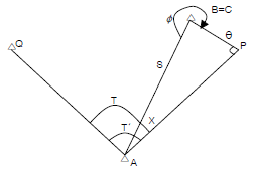
- 69° 21′ 10″
- 68° 48′ 07″
- 68° 21′ 09″
- 69° 48′ 07″
(정답률: 8%)
67. 광파측거기(EDM)에서 발생되는 오차 중 거리에 비례하여 나타나는 것은?
- 위상차 측정오차
- 반사프리즘의 구심오차
- 반사프리즘 정수의 오차
- 변조주파수의 오차
(정답률: 54%)
68. 삼각 수준 측량에서 대기의 굴절에 의한 오차와 지구의 곡률에 의한 오차의 조정은?
- 관측치에 기차와 구차는 모두 낮게 조정한다.
- 관측치에 기차와 구차는 모두 높게 조정한다.
- 관측치에 기차는 낮게 구차는 높게 조정한다.
- 관측치에 기차는 높게 구차는 낮게 조정한다.
(정답률: 58%)
69. 삼각망을 구성하는데 있어서 내각을 작게 하는 것이 좋지 않은 이유를 가장 잘 설명하는 것은?
- 한 삼각에 있어서 작은 각이 있으면 반드시 다른 각 중에서 큰 각이 있기 때문이다.
- 경도, 위도 또는 좌표계산이 불편하기 때문이다.
- 한 가지변으로부터 타변을 sine 법칙으로 구할 때 오차가 많이 생기기 때문이다.
- 측각하기가 불편하기 때문이다.
(정답률: 47%)
70. 삼각측량에서 기선 선정에 관한 설명으로 틀린 것은?
- 기선은 삼각측량의 정확도에 영향을 미친다.
- 기선길이의 최단한도는 1회 확대 변장의 1/10 이 적당하다.
- 소규모 삼각측량에서는 삼각망의 1변을 기선으로 한다.
- 기선을 측정하는 지면의 경사는 1/25 이하로 하는 것이 바람직하다.
(정답률: 53%)
71. 우리나라 축척 1/50000 지형도에서 515m의 산정(山頂)과 295m의 산정 간에 주곡선(계곡선 포함)은 몇 개가 들어가는가?
- 3개
- 9개
- 11개
- 15개
(정답률: 64%)
72. 축척 1:25000의 지형도에서 제한 기울기를 4%로 할 때 등고선(주곡선)간의 수평거리는?
- 5㎜
- 10㎜
- 20㎜
- 40㎜
(정답률: 42%)
73. 축척이 1/50000 인 지형도 상에 4cm2의 면적은 실제로는 얼마의 면적인가?
- 2km2
- 1.5km2
- 1km2
- 0.2km2
(정답률: 82%)
74. A 및 B점의 좌표가 XA = +70.50m, YA = +120.60m, XB =+150.40m, YB = +630.10m 이다. A에서 B까지 결합다각측량을 하여 계산해본 결과 합위거가 +82.30m, 합경거가 +513.00m이었다면 이 측량의 폐합차는?
- 1.24m
- 2.24m
- 3.24m
- 4.24m
(정답률: 31%)
75. 측량기기의 특징에 대한 설명 중 잘못된 것은?
- 디지털 데오도라이트를 이용하여 각을 관측할 경우 각 읽음오차를 소거 할 수 있다.
- 존자파거리측량기(EDM)로 거리를 관측할 경우 온도, 습도, 기압에 대한 영향을 보정해야 정확한 거리를 측정할 수 있다.
- 수준측량에 사용되는 레벨의 기포관 강도는 망원경의 확대배율로 표시한다.
- 평판측량에서 사용되는 보통엘리데이드는 시준공의 직경과 시준사의 굵기에 의해 시준오차가 발생한다.
(정답률: 30%)
76. 전자파 거리 측량기에 대한 설명으로 옳지 않은 것은?
- 전파 거리 측량기는 광파 거리 측량기보다 안개나 비 등의 기후에 비교적 영향을 받지 않는다.
- 전파 거리 측량기는 광파 거리 측량기보다 장거리용으로 주로 사용된다.
- 광파 거리 측량기는 전파 거리 측량기보다 1변 관측의 조작시간이 길다.
- 전파 거리 측량기의 최소 조작 이원은 2명이며 광파 거리 측량기는 1명으로 가능하다.
(정답률: 58%)
77. 1등 수준측량에서 2㎞ 구간을 왕복한 결과 측정오차가 7㎜ 발생하였다. 알맞은 처리방법은?
- 오차가 크므로 재축을 요한다.
- 큰 오차가 발생했다고 생각되는 곳에 분배한다.
- 허용오차가 안에 들어가므로 그대로 인정한다.
- 결과를 평균하여 고저차를 결정한다.
(정답률: 64%)
78. A점의 좌표가 (145.32m, 256.22m), B의 좌표가 (-251.11m, -140.21m)일 때 AB측선의 방위각은?
- 45°
- 135°
- 225°
- 315°
(정답률: 39%)
79. 다음 정밀도와 정확도에 대한 설명 중 옳지 않은 것은?
- 정확도는 관측값이 목표값에 얼마나 접근하느냐의 정도에 따라 결정된다.
- 정밀도는 관측집단의 편차 크기에 따라 결정된다.
- 착오와 정오차가 없다면 정밀도를 정확도의 척도로 사용할 수 있다.
- 확률오차(ro)와 표준편차(mo) 사이에는 mo = ±0.6745 ro 의 관계가 있다.
(정답률: 47%)
80. 지형도 작성에서 지표면이 낮거나 움푹 패인 점을 연결한 선으로 합수선 또는 합곡선이라 부르는 선은?
- 최대경사선
- 철선(능선)
- 요선(계곡선)
- 경사변환선
(정답률: 70%)
5과목: 측량학
81. 우리나라 수준원점의 소재지는?
- 서울
- 인천
- 수원
- 부산
(정답률: 85%)
82. 측량의 기준에서 지리학적 경위도와 평균해면으로부터의 높이로 표시해야 할 것은?
- 위치
- 거리
- 면적
- 지구의 형상과 크기
(정답률: 59%)
83. 1등 삼각점 반석의 크기로 옳은 것은?
- 25 × 25㎝
- 26 × 26㎝
- 30 × 24㎝
- 30 × 30㎝
(정답률: 60%)
84. 국토지리정보원장이 간행하는 지도의 축척이 아닌 것은?
- 1/2500
- 1/15000
- 1/25000
- 1/5000
(정답률: 9%)
85. 다음 중 측량표를 감시할 의무가 있는 자는?
- 건설교통부장관
- 행정자치부장관
- 시장･군수 또는 구청장
- 경찰서장
(정답률: 16%)
86. 건설교통부장관은 일반측량의 실시자에게 측량성과 등 사본의 제출을 요구할 수 있다. 다음 중 그 목적이 아닌것은?
- 측량의 중복배제
- 측량에 관한 자료의 수집･분석
- 측량성과의 심사
- 측량의 정확성 확보
(정답률: 29%)
87. 지도에 표시된 기호 및 선의 종류에 관한 설명으로 틀린것은?
- 기호 및 선의 굵기는 국토지리정보원장이 정한다.
- 선은 실선과 파선으로 구분한다.
- 지물의 실제현상 또는 상징물의 표현은 선 또는 기호로 표시한다.
- “기호”라 함은 지도에 표기하는 지형･지물 및 지명 등을 나타내는 상징적인 문자 등의 크기･모양 등을 말한다.
(정답률: 29%)
88. 측량협회의 설립목적으로 틀린 것은?
- 측량업자 및 측량기술자의 품위보전
- 측량에 관한 기술의 향상
- 측량제도의 건전한 발정에 기여
- 측량법령의 제 ･ 개정
(정답률: 9%)
89. 측량업의 등록기준에서 아래의 표와 같은 장비기준을 요구하는 측량업은?
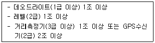
- 측지측량업
- 일반측량업
- 공공측량업
- 수치지도제작업
(정답률: 59%)
90. 측량업자인 법인이 파산 또는 합병외의 사유로 해산한 경우 그 첨산인은 다음 중 누구에게 그 사실을 신고하여야 하는가?
- 행정자치부장관
- 군수
- 건설교통부장관
- 국무총리
(정답률: 43%)
91. 부정한 방법으로 측량업의 등록을 한 자의 벌칙은?
- 200만원 이하의 과태료를 부과한다.
- 1년 이하의 징역 또는 1000만원 이하의 벌금에 처한다.
- 2년 이하의 징역 또는 2000만원 이하의 벌금에 처한다.
- 3년 이하의 징역 또는 3000만원 이하의 벌금에 처한다.
(정답률: 40%)
92. 측량용 사진과 위성영상을 이용한 도화기상에서의 지형･지물의 측정 및 묘사와 그에 관련된 좌표측량･영상판독 및 현지조사를 업무내용으로 하는 측량업은?
- 공간영상도화업
- 항공찰영업
- 수치지도제작업
- 지도제작업
(정답률: 15%)
93. 기본측량에 관한 다음의 설명 중 틀린 것은?
- 기본측량에 종사하는 자가 영구표지를 설치하기 위하여 필요한 때에는 미리 그 소유자 또는 점유자에게 통지하여 토지 등을 일시 사용할 수 있다.
- 기본측량에 종사하는 자는 측량의 실시를 위하여 필요하다고 인정하는 경우에는 미리 그 소유자 또는 점유자의 승낙을 받아 장해가 되는 식물을 제거할 수 있다.
- 기본측량에 종사하는 자가 측량을 실시하기 위하여 타인의 토지나 건물에 출입하고자 하는 때는 그 권한을 표시하는 증표를 지니고 관계인에게 이를 내보여야 한다.
- 건설교통부장관은 기본측량을 실시하기 위하여 필요하다고 인정하는 경우에는 토지･건물･죽목 기타 공작물을 수용하거나 사용할 수 있다.
(정답률: 50%)
94. 공공측량으로 지정할 수 있는 일반측량이 아닌 것은?
- 지하시설물 측량
- 촬영지역의 면적이 1km2 이상인 측량용 사진의 촬영
- 측량 노선길이가 5㎞ 이상인 수준측량
- 국토지리정보원장이 발행하는 지도의 축척과 동일한 축척의 지도제작
(정답률: 24%)
95. 손실 보상에 대한 관할토지수용위원회의 재결에 대하여 불복이 있는 자는 재결서 정본의 송달을 받은 날로부터 몇 개월 이내에 중앙토지 수용위원회에 이의를 신청할 수 있는 가?
- 1개월
- 2개월
- 3개월
- 4개월
(정답률: 67%)
96. 다음 중 측량기가 성능검사 대행자 등록에 있어 결격사유로 잘못 설명한 것은?
- 금치산자
- 한정치산자
- 등록이 취소된 후 3년이 경과되지 아니한 자
- 파산선고를 받고 복권되지 아니한 자
(정답률: 62%)
97. 다음 중 임시 설치 표지는?
- 삼각점표석
- 표기
- 측표
- 자기점표석
(정답률: 50%)
98. 측량업자는 당해 측량용역기간 중 대통령령이 정하는 바에 의하여 측량기술자를 용역현장에 배치하여야 하는데 이 때 공공측량용역의 경우 배치기준으로 옳은 것은?
- 고급기술자 1인 이상
- 중급기술자 1인 이상
- 특급기술자 1인 이상
- 초급기술자 1인 이상
(정답률: 50%)
99. 1/5000지형도 도식적용규정에서 정의한 도로의 종류로 잘못된 것은?
- 실폭도로란 폭(노견에서 노견까지)이 3.0m 이상의 도로로서 폭을 축척화하여 표시하는 도로를 말한다.
- 건설중인 도로란 현재 건설 중에 있는 모든 도로를 말한다.
- 소형차로란 기호도로중 도로의 폭이 1.6m 이상 3.0m 미만의 도로를 말한다.
- 소로란 기호도로중 도로의 폭이 1.6m 미만의 도로를 말한다.
(정답률: 59%)
100. 1/5000 지형도에 티크(Tick) 표시하는 직각좌표의 거리 단위는 몇 ㎞ 단위로 규정되어 있는가?
- 0.5㎞
- 1.0㎞
- 2.0㎞
- 4.0㎞
(정답률: 37%)
곡률 오차 = (10㎞)^2 / (2 x 5000㎞) = 0.01㎞
따라서, 정답은 "0.01㎞"입니다.